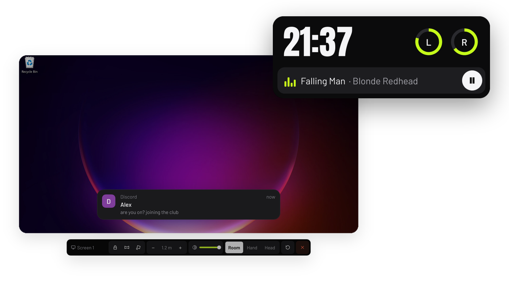
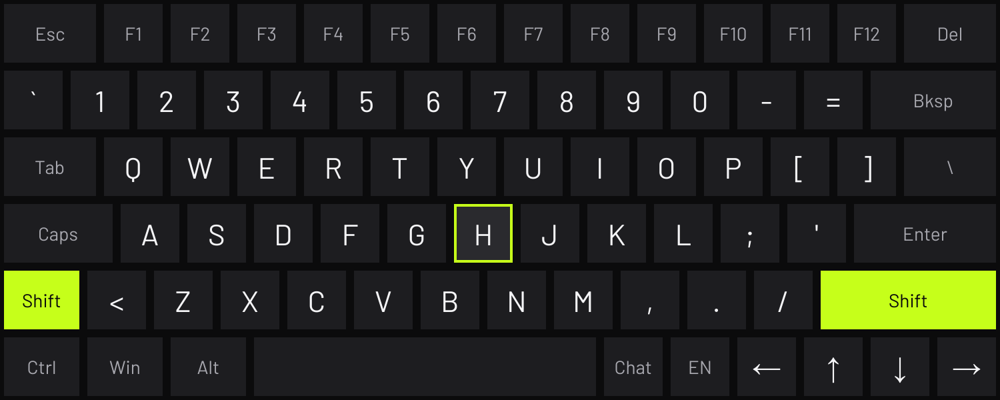
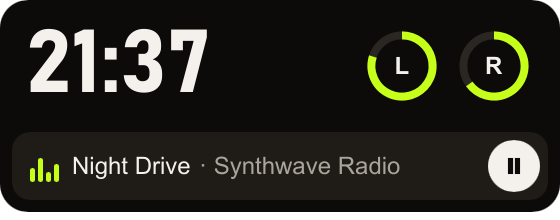

WristXR
VR desktop overlay
with
wrist clock
Screens and windows in VR, laser pointer, VR keyboard, VRChat chatbox and Discord on your wrist. SteamVR on Windows and Linux.
Free and open source
under 0.1 ms GPU per frame